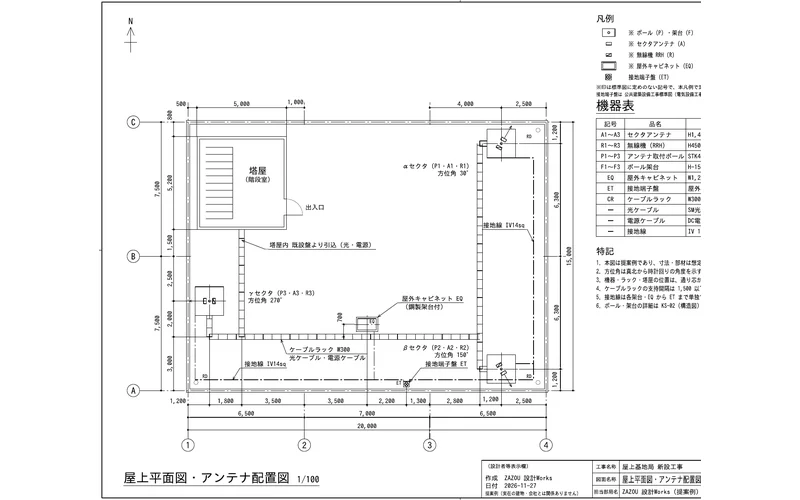

2D図面No.01 通信設備／配置図・構造図
屋上基地局 アンテナ配置図・構造図
- どんな資料か
- ビル屋上に通信の基地局を新設する工事の、アンテナ配置図と、アンテナを支えるポール架台の構造図です。
- 使う場面
- 屋上に機器や架台を置く工事で、配置・配線ルートと架台の形・部材を、施工者と共有するとき。
- 入っている内容
- 屋上平面図・アンテナ配置図（1/100）は、通り芯と寸法、3セクタのアンテナと方位角（30°・150°・270°）、ケーブルラック、屋外キャビネット、接地線、凡例と機器表（10行）。構造図はポール架台の立面図・平面図（1/20）とベース詳細（1/10）、部材表（長さ・数量・質量、合計 約421kg）、アンテナ設置諸元の表。
- 納める形式
- PDF A3・2枚